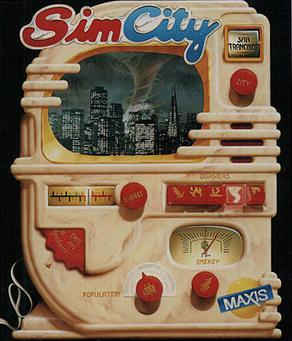
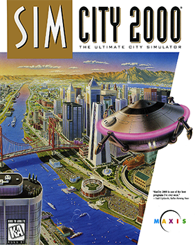
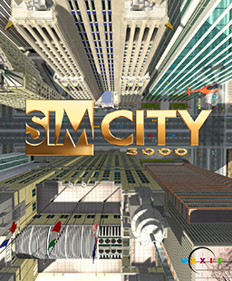
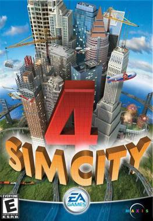
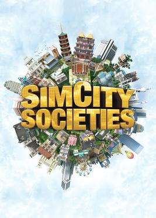
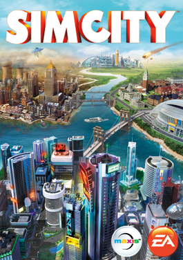
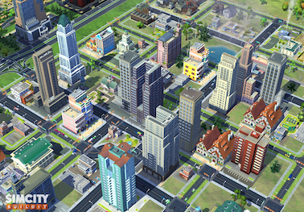

The game that invented the genre. Will Wright's original SimCity gave players an empty plot of land and a set of municipal tools — zone residential, commercial, and industrial areas; lay roads and rail; build power plants; manage budgets. There were no win conditions, no score to beat, no enemies. Just a city to grow or neglect.
It sold modestly at first — publishers thought a game with no way to win was unsellable. Broderbund eventually took it on, and it became a phenomenon. The idea that a simulation itself could be the entertainment was completely new.

The jump that defined the series. SimCity 2000 added an isometric perspective, underground water and subway systems, elevation and terraforming, a proper budget window with bond financing, and an encyclopedia of in-game information. It was richer, deeper, and more beautiful than anything before it.
For many players, SimCity 2000 remains the definitive version of the game — the perfect balance of approachability and depth, before the series began adding complexity for its own sake.

The first SimCity published by Electronic Arts after their acquisition of Maxis. SimCity 3000 refined the 2000 formula with larger cities, a more detailed advisor system, improved terrain, and neighbor deals — trade agreements with adjacent cities for water, power, and garbage disposal. The animations and soundtrack were a step forward.
It was a refinement rather than a reinvention, and players appreciated that. The Unlimited edition added biome-based tilesets and additional buildings, keeping the game fresh years after release.

The most sophisticated SimCity ever made — and one of the greatest city builders in the history of the genre. SimCity 4 introduced full 3D, regional play across multiple interconnected cities, a day/night cycle, detailed commute simulation, and a modding system that spawned one of gaming's most dedicated communities.
The Rush Hour expansion added street-level traffic views, U-Drive-It vehicle control, and highway interchanges. The modding community's Network Addon Mod (NAM) is still actively updated today — adding transit types, interchanges, and mechanics that surpass the original game.

The controversial departure. SimCity Societies was developed not by Maxis but by Tilted Mill Entertainment, and it showed. The traditional zoning system was replaced with a "social energy" mechanic — cities accumulated creativity, productivity, prosperity, or other traits based on buildings placed. The simulation depth of previous games was almost entirely absent.
It was not well received. Fans rejected it as a SimCity game in name only. The series' reputation took a hit, and Maxis was noticeably absent from the credits. Societies stands as a cautionary tale about what happens when a franchise is handed to a team that doesn't understand its core appeal.

The reboot that ended an era. The 2013 SimCity was visually stunning, built on the GlassBox simulation engine which modeled individual Sims moving through cities in real time. The multi-city region system was innovative and the art direction was excellent. But two decisions poisoned it entirely.
First: always-online DRM that required a server connection to play single-player. At launch, EA's servers collapsed under the load, making the game unplayable for days. The debacle became one of gaming's most notorious launches. Second: city sizes were a fraction of SimCity 4's — a decision later revealed to be driven by multiplayer design, not technical necessity, after modders unlocked larger maps within weeks.

EA's mobile interpretation of SimCity, free-to-play with optional purchases. BuildIt strips the series to its most accessible form: place zones, collect resources from buildings, fulfill citizen requests. The core loop is more casual management than urban simulation — production chains, trade, and expanding districts in a compact format.
It has been consistently profitable for EA and continues to receive updates, making it the most actively maintained SimCity product. For many players' first introduction to city building on mobile, it succeeds on its own terms even if it shares little with its PC predecessors in depth or philosophy.